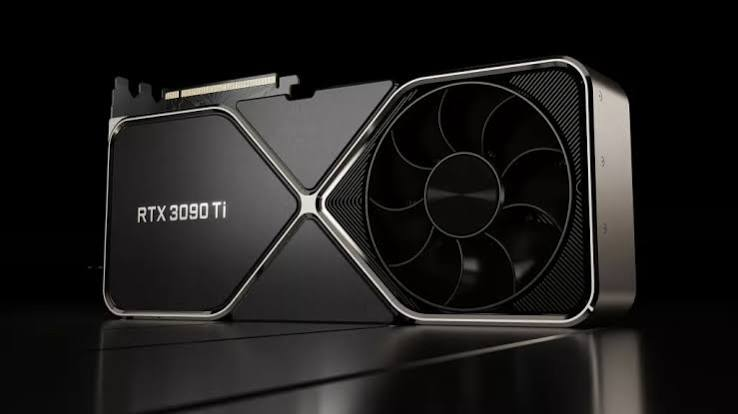
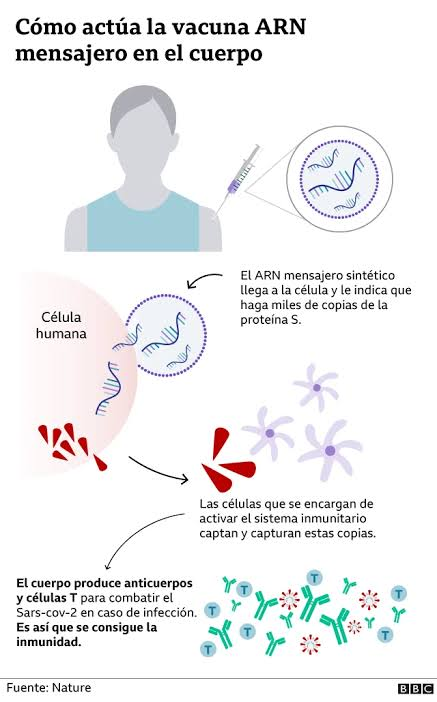

Creador / Empresa: Mark Zuckerberg
Propósito inicial: Crear un directorio digital universitario privado para conectar a los estudiantes de la Universidad de Harvard.
Propósito final: Convertirse en la red social global más grande del mundo, cambiando la forma en que nos comunicamos, la publicidad digital y el consumo de noticias.
YouTube
Creador / Empresa: Chad Hurley, Steve Chen y Jawed Karim
Propósito inicial: Crear una plataforma simple de citas en video donde los usuarios pudieran subir videos presentándose.
Propósito final: Ser la biblioteca en video más grande del planeta, democratizando el entretenimiento, la educación en línea y creando la economía de los creadores de contenido.

Creador/Empresa: Kevin Systrom y Mike Krieger
Propósito inicial: Nació como Burbn, una aplicación de "check-in" para compartir ubicaciones y fotos ocasionales en reuniones sociales.
Propósito final: Evolucionar hacia una plataforma enfocada en la estética visual, la cultura del estilo de vida, la economía de influencers y el comercio electrónico.
GPUs (Tarjetas Gráficas)

Creador/Empresa: NVIDIA / AMD
Propósito inicial: Procesar y renderizar gráficos 3D acelerados para mejorar la experiencia visual en los videojuegos.
Propósito final: Convertirse en el motor de procesamiento masivo en paralelo que impulsa el entrenamiento de la Inteligencia Artificial moderna, la supercomputación y la minería de criptomonedas.
Bitcoin
Creador/Empresa: Satoshi Nakamoto
Propósito inicial: Funcionar como un sistema de dinero en efectivo electrónico entre iguales (P2P), de uso diario y alternativo al sistema bancario tradicional[cite: 1].
Propósito final: Consolidarse como un activo digital de reserva de valor ("oro digital"), además de sentar las bases tecnológicas (Blockchain) para todo el ecosistema financiero de las criptomonedas[cite: 1].
Vacunas de ARNm

Creador/Empresa: Katalin Karikó y Drew Weissman
Propósito inicial: Desarrollar terapias génicas personalizadas para tratar enfermedades crónicas, inmunológicas y ciertos tipos de cáncer.
Propósito final: Servir como una plataforma inmunológica de rápida respuesta global que permitió sintetizar en tiempo récord las vacunas contra el COVID-19 y abrir nuevas puertas para la medicina preventiva.